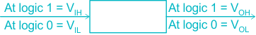
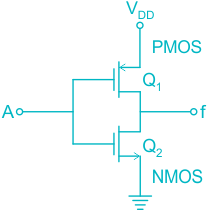

07 Logic Families
Logic Families
Basic Gate of a logic family
Each IC digital logic family has a Basic Gate.
●
This gate is either the NAND gate or the NOR gate .
●
Note: A BJT in its simplest construction act as NOT gate or Inverter .
Characteristics of logic family
Propagation delay (t PD )
It is defined as average transition delay for a signal to propagate from the input to the
output of a logic gate. It is measured in nanoseconds (ns) 𝑡 𝑃𝐻𝐿 +𝑡 𝑃𝐿𝐻 𝑡 𝑃𝐷 = 2 Where, T PHL = Propagation delay when O/P goes from HIGH to LOW T PLH = Propagation delay when O/P goes from LOW to HIGH.
Power dissipation (P D )
Power drawn by a logic gate from the power supply.
It is measured in milli Watts (m W) P D = V CC I avg (in m W) Where, V CC = Collector voltage or supply voltage I avg = Average supply current
Figure of Merit or speed power product
It is defined as the product of T PD & P D FOM = P D × t PD (in Joule) It is measured in pico Joules (p J) A low value of FOM is desirable.
●
Fanout
It is defined as the maximum number of logic gates that can be successfully driven by the
output of driving gate.
𝐼 𝑂𝐻 𝐹𝑎𝑛𝑜𝑢𝑡 𝐻 = 𝐼 𝐼𝐻 𝐼 𝑂𝐿 𝐹𝑎𝑛𝑜𝑢𝑡 𝐿 = 𝐼 𝐼𝐿 Overall fanout = min (fanout H, fanout L)
Noise margin
It is defined as the maximum noise voltage that can be tolerated by the input of a logic
gate without effecting the output. Noise margin at higher level NM H = V OH – V IH Overall Noise Margin = Minimum (NM H, NM L)

BJT families
RTL (Resistor transistor logic) family
Data sheet of RTL:
Basic Gate: NOR Gate Propagation delay: 25 ns Power dissipation: 12 m W FOM: 300 p J Fanout: 5 Noise Margin: 0.4 V
Disadvantage:
Lower speed of operation Low noise margin Lowest fanout NOTE:
In RTL, wired AND logic is possible.
●
DCTL (Direct coupled transistor logic)
In RTL logic family, if input resistance removed then resultant is DCTL.
Basic Gate: NOR Gate The Problem of current Hogging is associated with this logic family.
●
DTL (Diode transistor logic) family
Data sheet:
Basic Gate – NAND Gate Propagation delay – 30 ns Power dissipation – 12 m W FOM – 360 p J Fanout – 8 Noise margin – 1V NOTE In DTL, wired AND logic is possible.
The Fanout of DTL can be increased by replacing diode D, by a transistor. This circuit is
known as Integrated DTL gate.
HTL (High threshold logic) family
It is the modification of DTL.
Zener diode is used in place of D 2 Noise Margin: 7.5 V In HTL, wired AND logic Gate is possible.
Basic Gate: NAND Gate Logic 0 = 2 V ⇒ Higher voltage swing Logic 1 = 12 V ⇒ Higher voltage swing P diss. = 55 m W t pd = 90 ns
TTL (Transistor Transistor logic) family
Data sheet
Basic Gate: NAND t pd: 9 ns p diss = 10 m W FOM = 90 p J Fanout = 10 Noise margin = 0.4 V Logic 0 = 0.2 V Logic 1 = 2.4 – 5 V Note:
In TTL, wired AND logic is Not possible.
If any input is open/floating, then no current flows through that input path this is also the
case when logic 1 is applied at that input.
Therefore, open or floating input act as logic 1 in TTL.
BJT regions of operations
| BE Junction | BC Junction | Region | Action |
|---|---|---|---|
| ON | OFF | Active | Amplifier |
| OFF | OFF | Cut-off | Open switch |
| ON | ON | Saturation | Closed switch |
| OFF | ON | Reverse Active | Attenuator |
Schottky TTL
Schottky Barrier Diodes are placed between the base & collector of transistor.
●
It prevents the transistor from entering into saturation region.
Transistor operates in Active & cut off regions.
Very low propagation delay.
Schottky TTL uses a double emitter follower known as Darlington pair to increase the
speed of operation.
ECL (Emitter coupled logic)
Basic Gate: NOR/OR It is Never go in saturation region. Only work in cutoff & Active region.
Very low propagation delay (1 ns) ECL provide wired OR logic with NOR output.
ECL provide wired AND logic with OR output.
●
Disadvantages:
Very high power dissipation.
Very low Noise margin
It is also known as MTL (merged Transistor logic)
Basic Gate: NOR FOM: < 1 p J
MOS Families
Advantages of MOS families as compared to BJT families
It has lower power dissipation.
It has higher fan out.
It is simpler fabrication process.
It has lower cost of fabrication.
It has higher packing density.
●
NOTE: -
1 In MOS, channel resistance 𝑅∝ () 𝑤 𝐿 Where, w = channel width L = channel length MOS can be used as a Load resistor as well by permanently biasing the Gate for
conduction.
NMOS
Logic ‘0’ = OFF Logic ‘1’ = ON
NMOS NOT Gate
A T 2 Y 0 OFF 1 1 ON 0
NMOS NAND Gate
| A | B | T 2 | T 3 | Y |
|---|---|---|---|---|
| 0 | 0 | OFF | OFF | 1 |
| 0 | 1 | OFF | ON | 1 |
| 1 | 0 | ON | OFF | 1 |
| 1 | 1 | ON | ON | 0 |
NMOS NOR Gate
| A | B | Q 1 | Q 2 | f |
|---|---|---|---|---|
| 0 | 0 | OFF | OFF | H |
| 0 | 1 | OFF | ON | L |
| 1 | 0 | ON | OFF | L |
| 1 | 1 | ON | ON | L |
PMOS
Symbol
Logic ‘0’ = ON Logic ‘1’ = OFF
PMOS NOT Gate
A B Y 0 0 1 0 1 0 1 0 0 1 1 0
C MOS (Complementary MOS)
In CMOS, only one MOS is ON at any instant.
Major power drain occurs in a CMOS when the circuit changes states.
Power dissipation depends upon the frequency of the input signal.
V DD may range from 3 V to 15 V, typically V DD = 5V
●
CMOS NOT GATE

| A | Q 1 | Q 2 | f |
|---|---|---|---|
| 0 | ON | OFF | 1 |
| 1 | OFF | ON | 0 |